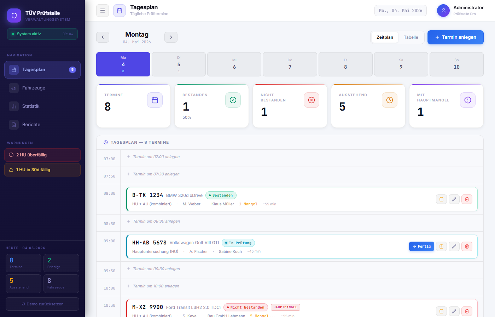
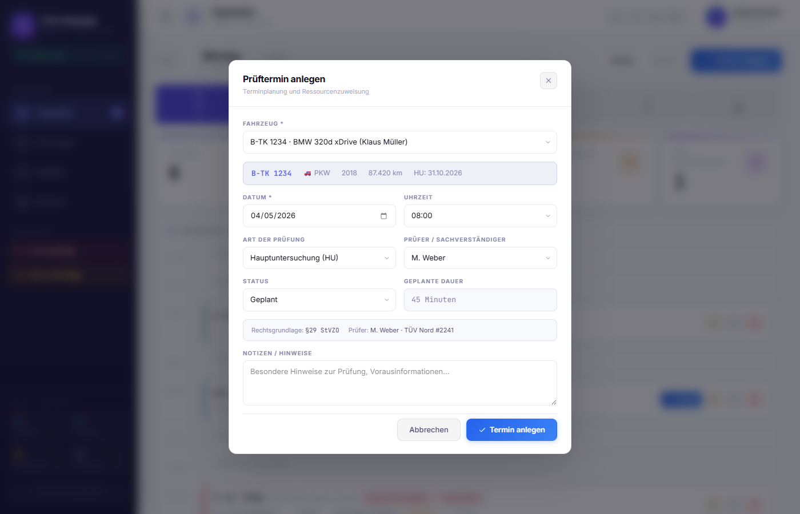
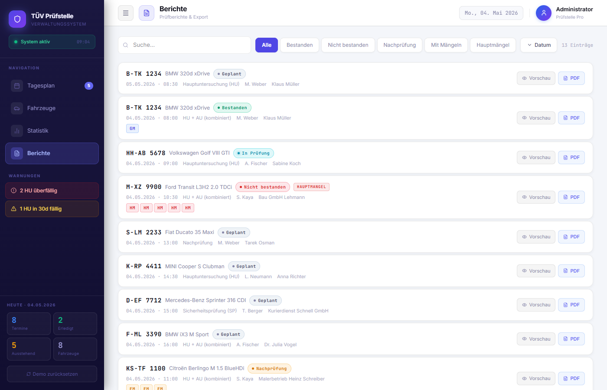
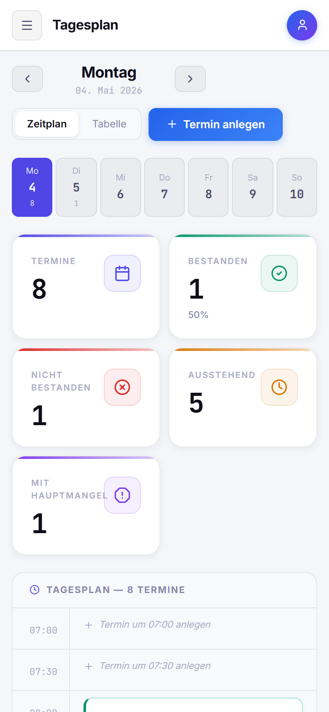
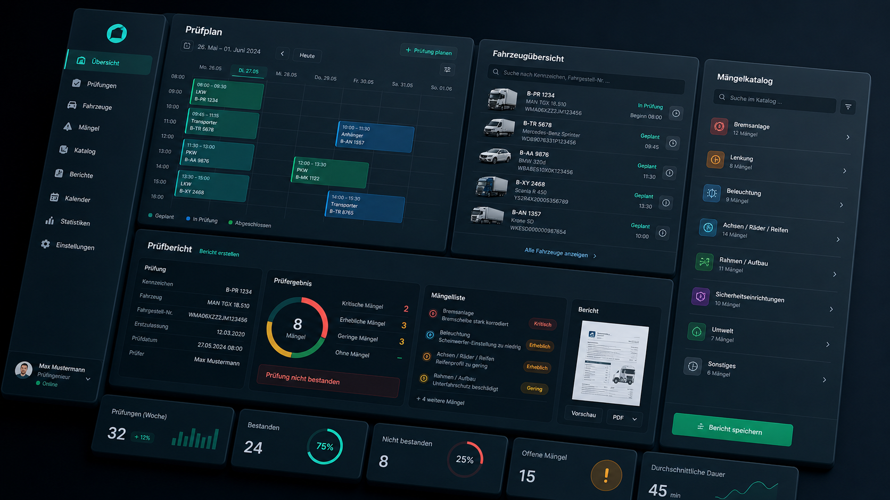

Software-Projekt · IIM-211-01 · SoSe 2026 · Abschlusspräsentation
TÜV Prüfstelle Pro
Ein On-Premise-Verwaltungssystem für den kompletten Prüfprozess einer TÜV-Prüfstelle — mit Rollen-Login, relationaler Integrität in MariaDB und 231 automatisierten Tests.
Team
Marwan Saleh · Oussama Hlayhel
Hochschule Hannover · Fakultät II
Juli 2026 · github.com/maroxd3/tuv-workflow-web
● TÜV PRÜFSTELLE PRO
01 / 23
Agenda
Was Sie auf den nächsten 21 Slides erwartet
Vom Problem über Architektur, Datenmodell und Sicherheit bis zur Teststrategie — der komplette Projektstand nach 10 Sprints.
01 Problem & Motivation
09 Benutzer & Login-Sicherheit
02 Rollen & Rechte-Matrix
10 API-Hardening
03 Anwendungsfälle je Akteur
11 Frontend-Qualität
04 Anforderungen & Backlog-Stand
12 Testpyramide — 231 Tests
05 Architektur: On-Premise-Modell
13 UI-Flow-Tests & CI/CodeQL
06 Architektur: Schichten, ein View-Model
14 DSGVO & Backup-Konzept
07 Datenmodell: ER, 3NF, Constraints
15 Methodik, ADRs, Feedback-Wirkung
08 Versionierte Schema-Migrationen
16 Demo, Ausblick & Q&A
Roter Faden: Jede fachliche Regel wird dort durchgesetzt, wo sie nicht umgangen werden kann — in der Datenbank und im Server. UI-Komfort kommt obendrauf, nicht anstelle.
● TÜV PRÜFSTELLE PRO
02 / 23
01 · Problem
Warum dieses Projekt?
Die meisten kleinen und mittleren Prüfstellen verwalten ihren Tagesablauf bis heute mit Excel und Papier. Daraus entstehen konkrete operative Schmerzen — und ein Datenschutz-Dilemma bei Cloud-Lösungen.
Status quo in der Branche
- Termine in Excel-Kalendern — kein gemeinsamer Stand zwischen Empfang, Prüfern und Leitung
- Doppelvergabe von Slots, weil der Empfang nicht sieht, dass ein Prüfer bereits auf einem Termin sitzt
- Tippfehler bei Kennzeichen, FIN, Halter-Daten — keine strukturelle Prüfung
- Mängelerfassung als Freitext, ohne Bezug zum StVZO-Anlage-VIII-Katalog
- Keine Zugriffskontrolle: jeder am PC kann alles ändern und löschen
- Kundendaten in US-Cloud-Tools — heikel für einen Werkstattbetrieb
Antwort: TÜV Prüfstelle Pro
Ein System für den ganzen Prozess — im eigenen Haus
Tagesplan, Fahrzeug- und Halter-Stammdaten, Mängelkatalog, Workflow-Steuerung, Statistik und Berichte. Läuft komplett im LAN der Prüfstelle: docker compose up auf einem Server-PC, Kundendaten verlassen die Werkstatt nie.
Regeln, die nicht umgangen werden können
Kein „Bestanden" bei erheblichem/gefährlichem Mangel (§ 29 StVZO) — abgesichert in UI, API und als MariaDB-Trigger. Rollenrechte werden serverseitig erzwungen, nicht nur ausgeblendet.
Mehrbenutzer-Betrieb mit Login
Empfang, Prüfer und Chef arbeiten gleichzeitig auf demselben Datenbestand — Änderungen anderer erscheinen ohne F5 (5-Sekunden-Polling), jede Rolle sieht nur ihre erlaubten Aktionen.
● TÜV PRÜFSTELLE PRO
03 / 23
02 · Rollen
Von Personas zu echten Rollen mit Login
Empfang, Prüfer und Chef sind keine Beschreibungen mehr, sondern implementierte Benutzerrollen: eigene Konten in der benutzer-Tabelle, Login per Kürzel + Passwort, Rechte serverseitig erzwungen (requireAuth in server/index.js).
Empfang empfang
Terminvergabe & Stammdatenpflege: Halter, Fahrzeuge und Termine anlegen und ändern. Keine Prüfungs-Entscheidungen, nichts löschen.
Prüfer pruefer
Fachliche Ebene: zusätzlich Status setzen (Starten / Ergebnis) und Mängel erfassen/entfernen — Mängel-Rechte hängen bewusst am Status-Recht.
Chef chef
Alles — inklusive Löschen von Halter/Fahrzeug/Termin und /api/admin/* (Demo-Daten, Reset). Admin-Endpunkte verlangen zusätzlich den X-Admin-Token.
Rechte-Matrix — serverseitig durchgesetzt (ROLLEN_RECHTE in server/auth.js)
| Aktion | empfang | pruefer | chef |
|---|
| Lesen (alle GET-Endpunkte) | ✓ | ✓ | ✓ |
| Halter / Fahrzeuge / Termine anlegen + ändern | ✓ | ✓ | ✓ |
| Status setzen (PATCH /api/termine/:id/status) + Mängel anlegen/löschen | ✗ | ✓ | ✓ |
| Halter / Fahrzeuge / Termine löschen · /api/admin/* (+ X-Admin-Token) | ✗ | ✗ | ✓ |
Fail-closed: Unbekannte Rollen erhalten immer false. Die UI blendet verbotene Buttons zusätzlich aus (rechteFuerRolle im AuthContext) — aber durchgesetzt wird im Server: 401 ohne gültiges Token, 403 bei unzureichender Rolle.
● TÜV PRÜFSTELLE PRO
04 / 23
03 · Anwendungsfälle
Akteure und ihre Anwendungsfälle
Drei interne Akteure — jetzt deckungsgleich mit den drei Login-Rollen — und ein externer Akteur ohne Systemzugriff. Use-Case-Übersicht vollständig in docs/design.md.
Empfang / Verwaltung
- Termin anlegen, verschieben, kommentieren
- Fahrzeug + Halter anlegen, suchen, filtern (Halter-Dedupe beim Anlegen)
- HU-Fälligkeiten und Berichts-Historie einsehen
Prüfer (TÜV-Sachverständiger)
- Prüfung starten — Status auf In Prüfung
- Mängel nach StVZO Anlage VIII erfassen (Kategorien OM / GM / EM / GfM)
- Prüfergebnis setzen — WF-01 blockiert „Bestanden" bei EM/GfM
- A4-Bericht erzeugen und an Halter aushändigen
Chef / Leitung
- Statistik & KPIs: Bestehensquote, Prüfervergleich, Top-Mängel je Zeitraum
- Datenbestand bereinigen (löschen) — nur diese Rolle
- Admin-Funktionen: Demo-Daten laden, Reset (Token-geschützt)
Fahrzeughalter — extern, kein Systemzugriff
- Erscheint physisch zum Termin, erhält den Bericht
- Seit der 3NF-Migration eigene Entität: halter-Tabelle mit FK vom Fahrzeug
Default-Konten (Erst-Inbetriebnahme, Seed via INSERT IGNORE): empfang, MW (Prüfer), chef — gemeinsames Startpasswort aus DEFAULT_USER_PASSWORT, beim Kunden-Setup zu ändern. Bestehende Konten werden beim Boot nie überschrieben.
● TÜV PRÜFSTELLE PRO
05 / 23
04 · Anforderungen
Pflichtenheft & Backlog — Stand: praktisch alles umgesetzt
Funktionale und nicht-funktionale Anforderungen in docs/pflichtenheft.md, Product Backlog mit 17 User Stories in docs/backlog.md.
Funktional (F-01…F-10) — alle erfüllt
| Bereich | Beispiele |
|---|
| Stammdaten | Halter, Fahrzeuge mit Halterbezug pflegen (F-01/02) |
| Termine & Status | Terminplanung, Statuswechsel über UI + API (F-03/04) |
| Workflow | WF-01: kein „Bestanden" bei blockierendem Mangel (F-05) |
| Mängel | Kategorie + Beschreibung, StVZO-Katalog (F-06) |
| Auswertung | Statistik aus MariaDB, druckbare Berichte (F-07/08) |
| Betrieb | Demo-Daten & Reset per Admin-API (F-09/10) |
Nicht-funktional (NF-01…NF-08)
Datenkonsistenz per FK/UNIQUE/CHECK in MariaDB · Mehrclient-Fähigkeit · zentrale SQL-Schicht · .env-Konfiguration · keine Credentials im Frontend-Bundle · flüssige CRUD-Bedienung im LAN · automatisierbare Builds & Tests.
Backlog US-01…US-17
| Story | Status |
|---|
| US-01…10 — CRUD, WF-01, Statistik, Berichte, MariaDB, Health, .env | done |
| US-12 — Login + Rollen, serverseitig erzwungen | done |
| US-13 — Integrationstests gegen echte MariaDB (CI) | done |
| US-14 — versionierte DB-Migrationen (ADR-011) | done |
| US-15 — Docker-Compose-Deployment mit Production-Defaults | done |
| US-16 — Live-Sync per 5-Sekunden-Polling | done |
| US-17 — Kundendaten bleiben on-premise | done |
| US-11 — 3-Tier-Backup: Konzept + Binlog done, Cron-Skripte offen | in Arbeit |
Bemerkenswert: Alle „offenen Erweiterungen" aus Pflichtenheft § 9 (Stand 17.05.) — Auth & Rollen, Migrationsversionierung, API-Tests gegen Testdatenbank, Client-Sync — wurden in Sprint 9/10 tatsächlich umgesetzt. Einzig die Backup-Automatisierung ist noch Konzept.
● TÜV PRÜFSTELLE PRO
06 / 23
05 · Architektur
On-Premise: Die Prüfstelle betreibt ihren eigenen Server
Ein Befehl — docker compose up -d — startet MariaDB und die Express-API auf einem Server-PC im Werkstatt-LAN. Kundendaten verlassen die Werkstatt nie; Internetausfall beeinträchtigt den Betrieb nicht.
Prüfstelle — lokales Netzwerk, ohne Internet betreibbar
┌──────────────────────────────────────────────┐
│ Server-PC docker compose up -d │
│ ├── MariaDB 11.4 127.0.0.1:3306 │
│ │ Binlog aktiv (Backup-Tier 1) │
│ ├── Express-API Port 8787 (+ dist/) │
│ └── Adminer nur per --profile tools│
└──────────────────────────────────────────────┘
▲
│ HTTP/JSON /api (Bearer-Token)
┌─────────────┼─────────────┐
│ │ │
┌─────┴────┐ ┌─────┴────┐ ┌─────┴────┐
│ Empfang │ │ Prüfer │ │ Chef │
│ Browser │ │ Browser │ │ Browser │
└──────────┘ └──────────┘ └──────────┘
Auslieferungspaket pro Kunde: docker-compose.yml + .env-Vorlage + docs/backup.md — Details in design.md § 7.
Deployment-Härtung ab Werk
DB-Port nur localhost
MariaDB bindet an 127.0.0.1:3306 — die API erreicht sie übers interne Docker-Netz, das Werkstatt-WLAN nie direkt.
Production ist der Default
NODE_ENV=production im Compose — damit greifen Fail-fast-Guards, Rate-Limits und Login-Pflicht automatisch beim Kunden.
Adminer nicht standardmäßig
Das DB-Web-UI startet nur mit --profile tools — offenes Port-8080-Adminer wäre unnötige Angriffsfläche.
Single-Container-Frontend
Express liefert das gebaute React-Bundle aus dist/ mit aus — keine separate Webserver-Instanz nötig.
● TÜV PRÜFSTELLE PRO
07 / 23
05 · Architektur
Schichten — ein View-Model von SQL bis View
Klare Trennung: Views kennen kein SQL, der Server kennt kein React. Der frühere Kompatibilitäts-Adapter (useStoreCompat) wurde in Sprint 10 eliminiert — die DB-Feldnamen (camelCase-Spiegel der Tabellen) sind jetzt das einzige Datenmodell der App.
┌────────── PRÄSENTATION (Browser / Tauri) ─────────┐
│ TagesplanView · FahrzeugeView · StatistikView │
│ BerichteView · LoginView │
└───────────────────────────────────────────────────┘
│ props/context
▼
┌────────────────── LOGIK / STATE ──────────────────┐
│ AuthContext (Token, Rolle, Rechte) │
│ useDb.ts — optimistische Updates + Rollback, │
│ 5s-Polling mit Write-Suppression │
│ apiClient.ts — HTTP + Bearer-Token │
└───────────────────────────────────────────────────┘
│ HTTP/JSON /api (22 Endpunkte)
▼
┌────────────────── EXPRESS-API ────────────────────┐
│ requireAuth(Rolle) → validate.js → SQL │
│ Transaktionen (withTransaction) · Error-Mapping │
└───────────────────────────────────────────────────┘
│ mariadb-Driver (Pool, parametrisiert)
▼
┌────────────────── MARIADB 11.4 ───────────────────┐
│ 10 Tabellen · FKs · CHECKs · UNIQUEs · Trigger │
└───────────────────────────────────────────────────┘
Tech-Entscheidungen (je ein ADR)
| Wahl | Statt | Warum |
|---|
| MariaDB | Firestore | FKs, Trigger, ACID, on-premise (ADR-001) |
| Express 5 + mariadb-Driver | ORM / tRPC | expliztes SQL, kein Magic (ADR-004) |
| Monolithischer Server | Schichten-Zoo | 818 Zeilen, 2-Personen-Team (ADR-009) |
| API-Client-Pattern | fetch in Views | ein HTTP-Ort, testbar (ADR-007) |
| TypeScript graduell | Big-Bang | neue Module TS, Views JSX (ADR-005) |
| React 19 + Vite 8 | Next.js | SPA reicht, kein SSR/SEO nötig |
| Tauri 2 | Electron | Desktop-Build, ~6 statt ~150 MB |
Warum „ein View-Model" wichtig ist: Vorher übersetzte ein Adapter zwischen Legacy-View-Shape und DB-Shape — jede neue Spalte musste zweimal gepflegt werden. Jetzt fließt dieselbe Datenform (terminId, statusCode, …) durch alle Schichten.
● TÜV PRÜFSTELLE PRO
08 / 23
06 · Datenmodell
ER-Modell in dritter Normalform
Vier Kern-Entitäten in 1:N-Ketten, vier Stammdaten-Tabellen als FK-Ziele, plus benutzer für das Login. Keine eingebetteten Arrays, keine Redundanz — Mängel und Halter sind eigene Tabellen (ADR-002, ADR-008).
HALTER ──1:N──> FAHRZEUG ──1:N──> TERMIN ──1:N──> MANGEL
(RESTRICT) (CASCADE) (CASCADE)
FAHRZEUG { TERMIN {
fahrzeug_id PK termin_id PK
kennzeichen UNIQUE fahrzeug_id FK
fin UNIQUE (wenn gesetzt) datum, uhrzeit UK(fzg,datum,zeit)
hersteller, modell, typ prueft_code FK→PRUEFART (12)
baujahr CHECK 1885..2100 pruefer_kuerzel FK→PRUEFER
km-Stand CHECK 0..3 Mio status_code FK→STATUS (7)
hu_faellig INDEX notiz
halter_id FK }
}
MANGEL { BENUTZER {
mangel_id PK benutzer_id PK
termin_id FK kuerzel UNIQUE
code_stvzo, beschreibung rolle CHECK ∈ {empfang,pruefer,chef}
kategorie_code FK→MANGEL_KATEGORIE (4) passwort_hash (scrypt)
behoben BOOL aktiv BOOL
} }
Integrität auf 4 Ebenen
1. Entitäts-Integrität
UUID-Primärschlüssel · Kennzeichen, FIN, Halter-E-Mail und Benutzer-Kürzel UNIQUE · Termin-Slot pro Fahrzeug eindeutig
2. Referentielle Integrität
FK-Kette Halter→Fahrzeug→Termin→Mangel: ON DELETE CASCADE nach unten, RESTRICT für Halter mit Fahrzeugen, SET NULL für Prüfer
3. Workflow-Integrität
Kein „Bestanden" bei unbehobenem EM/GfM — DB-Trigger als letzte Schicht (Slide 12)
4. Wertebereichs-Integrität
CHECKs (Baujahr, km, Rolle) · Stammdaten-FKs statt freier Strings für Status, Prüfart, Prüfer, Kategorie · Frontend/Server-Validatoren (KBA-Liste, FIN, Regex) obendrauf
● TÜV PRÜFSTELLE PRO
09 / 23
06 · Datenmodell
Physisches Schema: 8 Fachtabellen + benutzer + schema_migration
Alle Tabellen InnoDB / utf8mb4, angelegt durch die versionierten Migrationen in server/migrations.js. Vollständiges DDL in docs/datenmodell.md.
| Tabelle | Zweck | Constraints & Indizes (Auswahl) |
|---|
| halter | Fahrzeughalter (eigene Entität, 3NF) | E-Mail UNIQUE · Index auf Name · FK-Ziel für Fahrzeug (RESTRICT) |
| fahrzeug | Fahrzeug-Stammdaten | Kennzeichen + FIN UNIQUE · CHECK Baujahr 1885–2100, km 0–3 Mio · Indizes hu_faellig, halter_id |
| termin | Prüftermine | UNIQUE (fahrzeug, datum, uhrzeit) · 4 FKs · Index (datum, uhrzeit) · WF-01-Trigger |
| mangel | Einzelmängel mit StVZO-Code | FK termin (CASCADE) + kategorie (RESTRICT) · Indizes termin_id, kategorie_code |
| status | 7 Termin-Status inkl. Endzustand-Flag | PK status_code — FK-Ziel, ON UPDATE CASCADE |
| pruefart | 12 Prüfarten (HU, AU, SP, § 21 …) | PK prueft_code — Seed idempotent per INSERT IGNORE |
| pruefer | Sachverständige mit Qualifikation | PK pruefer_kuerzel — Termin-FK mit ON DELETE SET NULL |
| mangel_kategorie | OM / GM / EM / GfM + blockiert_bestanden | Fachlogik als Datum: der WF-01-Trigger liest das Flag, kein Hardcoding |
| benutzer | Login-Konten der 3 Rollen | kuerzel UNIQUE · CHECK rolle ∈ {empfang, pruefer, chef} · scrypt-Hash, aktiv-Flag |
| schema_migration | Buchführung der Migrationen | version PK · name · applied_at — „Welchen Stand hat diese Kundendatenbank?" |
Designprinzip: Endliche Wertemengen (Status, Kategorien, Prüfarten) sind FK-Tabellen statt Strings oder Enums im Code — die Datenbank kennt die fachlichen Regeln selbst. Das Flag blockiert_bestanden macht den WF-01-Trigger datengetrieben.
● TÜV PRÜFSTELLE PRO
10 / 23
07 · Schema-Evolution
Versionierte Migrationen — ADR-011
Das alte Muster „CREATE TABLE IF NOT EXISTS bei jedem Boot" konnte neue Tabellen anlegen, aber bestehende nie verändern. Im On-Premise-Modell fatal: jede Prüfstelle betreibt ihre DB über Jahre — Software-Updates müssen das Schema beim Kunden nachziehen.
Das Framework (~60 Zeilen, server/migrations.js)
Buchführung in schema_migration
Jede Migration läuft genau einmal pro Datenbank und wird mit Version, Name und Zeitstempel protokolliert. Beim Boot werden nur noch nicht protokollierte Versionen angewendet.
Append-only
Ausgelieferte Migrationen werden nie editiert — Bestandskunden haben sie bereits protokolliert und würden die Änderung nie sehen. Neue Änderung = neue Version.
GET_LOCK gegen konkurrierende Boots
GET_LOCK('tuv_schema_migration', 30) serialisiert parallele Prozess-Starts (z. B. Container-Restart während ein zweiter Prozess migriert).
Kein Down-Pfad
Rollback läuft über das Backup-Konzept (Binlog + Dumps), nicht über Reverse-Migrationen — die wären ungetesteter Code für einen Pfad, den es betrieblich nicht gibt.
Die 3 Migrationen
| V | Name | Inhalt |
|---|
| 1 | initial-schema | 8 Fachtabellen — mit IF NOT EXISTS, damit Bestandsinstallationen sie als No-op durchlaufen |
| 2 | hu-richtlinie-kategorien | Alt-Kategorien → OM/GM/EM/GfM; FK ON UPDATE CASCADE benennt Mangel-Zeilen mit um |
| 3 | benutzer-tabelle | Login-Konten für die 3 Rollen (CHECK auf Rolle) |
Warum kein Flyway/Liquibase? MariaDB hat kein transaktionales DDL — der Hauptvorteil schwerer Frameworks (atomare Migrationen) existiert dort gar nicht. Was bleibt, ist Buchführung + Reihenfolge: 60 Zeilen. Konsequenz: jede Migration muss idempotent wiederholbar sein, falls sie mittendrin abbricht.
Zweigleisig by design: Schema-Änderungen sind versioniert; Seeds und der WF-01-Trigger sind Desired-State (INSERT IGNORE / CREATE OR REPLACE, idempotent bei jedem Boot) — eine Trigger-Korrektur erreicht alle Instanzen, ohne eine Migrations-Version zu verbrauchen.
● TÜV PRÜFSTELLE PRO
11 / 23
08 · Workflow-Integrität
WF-01: „Bestanden" ist bei EM/GfM unmöglich — beweisbar
§ 29 StVZO: mit unbehobenem erheblichen oder gefährlichen Mangel gibt es keine Plakette. Diese Regel ist dreifach abgesichert (ADR-003) — und die dritte Schicht wird per Integrationstest mit echtem SQL-Bypass bewiesen.
Schicht 1 · UI-Guard (React)
hatBlockierendenMangel() sperrt den „Bestanden"-Button, bevor ein Request entsteht — sofortiges Feedback für den Prüfer.
│ umgehbar per direktem API-Call ▼
Schicht 2 · API-Guard (Express)
PATCH /api/termine/:id/status prüft per JOIN gegen mangel_kategorie.blockiert_bestanden und behoben = FALSE → antwortet {ok:false, reason}.
│ umgehbar per generischem PATCH oder SQL-Client ▼
Schicht 3 · DB-Trigger (MariaDB)
trg_termin_wf01_update — BEFORE UPDATE ON termin wirft SIGNAL SQLSTATE '45000'. Der Express-Error-Handler mappt das auf HTTP 422. Von keiner Anwendung umgehbar.
Plus Auto-Demotion: Wird ein unbehobener blockierender Mangel zu einem bereits „Bestanden"-Termin erfasst, setzt die API den Termin transaktional (Mangel-INSERT + Status-UPDATE atomar) auf „Nicht bestanden" zurück.
Der Beweis: 7 Integrationstests (server/tests/wf01.test.js)
| Test | Zeigt |
|---|
| Layer 3: direkter SQL-UPDATE via docker exec | Trigger lehnt ab — Bypass an UI + API vorbei scheitert |
| Layer 2: generischer PATCH-Endpoint | HTTP 422 aus dem Trigger-Mapping |
| Layer 1: Status-Endpoint | sauberes ok:false mit Begründung |
| Happy Path ohne Mangel | „Bestanden" funktioniert normal |
| behoben = TRUE-Semantik | behobene Mängel blockieren nicht mehr |
| Auto-Demotion (2 Fälle) | unbehoben → demote; behoben → bleibt „Bestanden" |
Läuft in der CI gegen eine echte MariaDB (GitHub-Actions-Service-Container). Nur der SQL-Bypass-Test braucht den lokalen Docker-Stack und wird in CI übersprungen — die übrigen sechs laufen bei jedem Push.
● TÜV PRÜFSTELLE PRO
12 / 23
09 · Sicherheit
Login ohne Zusatz-Dependencies — node:crypto reicht
Bewusste Entscheidung: kein bcrypt, kein jsonwebtoken. Das On-Premise-Deployment soll ohne native Build-Toolchain auskommen, und server/auth.js bleibt als reines Funktionsmodul ohne DB-Zugriff unit-testbar (17 Tests).
Passwörter: scrypt mit Parametern im Hash
Format scrypt$N$r$p$salt$hash (N=16384). Die Parameter stehen im Hash selbst — sie können später erhöht werden, ohne Alt-Hashes zu invalidieren. Plausibilitätsgrenzen beim Parsen verhindern Speicher-Bomben aus manipulierten DB-Werten.
Token: HMAC-SHA256, 12 h gültig
JWT-artig, aber ohne Header-Segment — der Algorithmus ist fest, ein alg=none-Downgrade ist strukturell unmöglich. Payload: Kürzel, Name, Rolle, Ablauf.
Timing-sicher an jeder Vergleichsstelle
timingSafeEqual für Passwort-, Token- und Admin-Token-Vergleich (beide Seiten vorher gehasht → gleich lange Buffer). Unbekannte Kürzel rechnen trotzdem ein scrypt gegen einen Dummy-Hash durch — die Antwortzeit verrät nicht, welche Konten existieren.
Keine User-Enumeration, kein Brute-Force
Eine gemeinsame 401-Meldung für „Kürzel unbekannt" und „Passwort falsch" · Login-Rate-Limit 10 Versuche / 15 min in Produktion.
🛡
TÜV Prüfstelle Pro
ANMELDUNG · VERWALTUNGSSYSTEM
Kürzel
chef
Passwort
••••••••
Anmelden
Login-Screen (src/views/LoginView.jsx) — CSS-Nachbau
AUTH_ENABLED: an bei NODE_ENV=production, aus in Dev/CI (Requests laufen als Dev-Chef, Integrationstests unverändert). GET /api/auth/me verrät dem Frontend beim Start, ob Login verlangt wird.
● TÜV PRÜFSTELLE PRO
13 / 23
10 · Sicherheit
API-Hardening — Ergebnis eines externen Code-Reviews (ADR-010)
Nach einem Security-Review wurde eine Hardening-Roadmap abgearbeitet. Grundsatz: lieber loud broken als silently insecure — Fehlkonfiguration soll den Start verweigern, nicht still unsicher laufen.
helmet + CSP
Security-Header ab Werk. CSP verbietet Inline-Scripts (deshalb triggert der Berichts-Druck vom Opener statt per <script>); upgrade-insecure-requests entfernt — das LAN-Modell läuft bewusst über HTTP.
Rate-Limits (Produktion)
/api 600/min · /api/admin 30/15 min · /api/auth/login 10/15 min. In Dev/CI aus, damit Integrationstests nicht anschlagen.
CORS: nur LAN
Statt Wildcard: localhost + private RFC-1918-Netze (10.x, 172.16–31.x, 192.168.x) + explizite ALLOWED_ORIGINS-Whitelist.
Fehler-Semantik ohne SQL-Leak
Zentrales Mapping: Duplikat → 409 · fehlende Referenz → 400 · CHECK-Verstoß → 400 · Trigger-SIGNAL → 422. 500er geben keine err.message an Clients — SQL-Texte leaken Schema-Details; Details nur ins Server-Log.
Fail-fast-Boot-Guards
Production ohne ADMIN_TOKEN oder Auth ohne Secret → process.exit(1) mit klarer FATAL-Meldung. Beide Guards sind mit 2 echten Prozess-Tests abgedeckt.
Minimierte Angriffsfläche
DB-Port nur 127.0.0.1 · Adminer nur per Compose-Profil · Admin-Endpunkte doppelt geschützt (Chef-Rolle und X-Admin-Token) · express.json auf 1 MB begrenzt · durchgängig parametrisierte Queries.
Health mit Substanz: GET /api/health prüft die DB per SELECT 1 — sonst meldet der Endpoint „ok", während MariaDB längst weg ist. Multi-Step-Writes (Mangel + Demotion, Demo-Seed, Reset) laufen in echten Transaktionen (withTransaction: COMMIT/ROLLBACK).
● TÜV PRÜFSTELLE PRO
14 / 23
11 · Frontend
Frontend-Qualität: Tokens, Optimistic UI, Live-Sync
In Sprint 10 wurde das Styling auf Tailwind CSS 4 migriert — die UI blieb pixelgleich, aber die Design-Sprache hat jetzt eine einzige Quelle der Wahrheit.
Design-Tokens statt Streu-Styles
/* src/index.css — Quelle der Wahrheit */
@theme {
--color-surface: #FFFFFF;
--color-sb: #1A1740; /* Sidebar-Indigo */
--color-blue: #4F46E5; /* Primär-Akzent */
--color-green: #059669;
--color-red: #DC2626;
--font-mono: 'JetBrains Mono', …;
}
Tailwind-4-@theme-Tokens erzeugen die Utility-Klassen (bg-surface, text-sb-t1 …). src/styles/theme.js spiegelt dieselbe Palette als JS-Objekt für Recharts und dynamische Styles — dokumentiert synchron zu halten.
Login-Screen & Rollen-Gating
Ohne gültiges Token rendert die App nur den LoginView — die App-Shell (inkl. useDb-Polling) bleibt ungemountet. Nach Login blendet rechteFuerRolle() verbotene Aktionen aus; die Topbar zeigt Name + Rolle.
useDb: Schreiben fühlt sich sofort an
Optimistische Updates mit Rollback
Jeder Write patcht den React-State sofort (UI reagiert ohne Wartezeit) und merkt sich den Vorzustand. Lehnt der Server ab (z. B. WF-01, 409-Duplikat), wird der State zurückgerollt und ein Fehler-Toast gezeigt.
5-Sekunden-Polling mit Write-Suppression (US-16)
Der Empfang legt einen Termin an → das Prüfer-Tablet sieht ihn ohne F5. Das Polling pausiert, (a) wenn der Tab im Hintergrund ist (Page-Visibility-API) und (b) solange eine eigene Write-Operation läuft (writeInFlight-Zähler) — sonst könnte ein Poll-Tick mit altem DB-Stand den laufenden Write überschreiben.
N+1 eliminiert
GET /api/termine?include=maengel lädt Termine + Mängel in 2 SQL-Queries statt 1 + N HTTP-Roundtrips.
● TÜV PRÜFSTELLE PRO
15 / 23
12 · Tests
Testpyramide mit echten Zahlen: 231 Tests grün
Jeder Testfall folgt einem etablierten Entwurfsverfahren — Coverage ist Nebenprodukt, nicht Ziel. Vitest 4 + React Testing Library, DB-Tests gegen echte MariaDB.
╱ Prozess ╲ 2 Boot-Guard-Tests (echter node-Spawn)
╱───────────╲
╱ Integration ╲ 7 WF-01 gegen echte MariaDB
╱───────────────╲ (inkl. SQL-Bypass-Beweis)
╱ UI-Flows ╲ 12 Login · Rollen-Gating · WF-01
╱───────────────────╲ Fahrzeug-Anlage · Termin
╱ Komponenten/Hooks ╲ 49 Buttons, Inputs, StatusPill,
╱───────────────────────╲ useDb, useToasts, AuthContext
╱ Unit ╲ 161 Validatoren (71 + 38), Auth (17),
╱───────────────────────────╲ Datum (22), Mangel-Logik (13)
Zählung aus den Test-Dateien in src/tests/ und server/tests/ — 18 Dateien, 231 Testfälle.
Testentwurfsverfahren
1. Äquivalenzklassen
Eingaben partitioniert, pro Klasse ein Repräsentant — z. B. validateKmStand: gültig / leer / negativ / nicht-int / zu groß.
2. Grenzwertanalyse
An den Rändern: validateBaujahr mit 1884 (out), 1885 (in), Jahr+1 (in), Jahr+2 (out).
3. Entscheidungstabellen
Für Workflow-Regeln: Status × Mängel-Konstellationen, nur nicht-redundante Kombinationen.
4. Security-Fälle als Unit-Tests
server/tests/auth.test.js (17): kaputte Hashes, manipulierte scrypt-Parameter, gefälschte/abgelaufene Tokens, fail-closed für unbekannte Rollen.
● TÜV PRÜFSTELLE PRO
16 / 23
13 · Tests & CI
UI-Flow-Tests + Pipeline: jeder Push wird bewiesen
Die 12 Flow-Tests rendern die echte App-Shell mit gemocktem API-Client und klicken die kritischen Pfade durch — inklusive Login, Rollen-Gating und WF-01 durch die UI.
12 Flow-Tests (src/tests/flows/)
| Flow | Prüft u. a. |
|---|
| Login (3) | 401 → LoginView, App-Shell ungemountet · Erfolg → Topbar zeigt Benutzer · falsche Daten → Fehlermeldung |
| Rollen-Gating (2) | empfang: keine Lösch-/Status-Buttons · chef: alles sichtbar |
| WF-01 via UI (3) | EM-Mangel sperrt „Bestanden" (kein API-Call) · Server-Ablehnung → Toast + Status bleibt · Gegenprobe ok:true |
| Fahrzeug-Anlage (3) | Pflichtfeld-Fehler · KBA-Kreiscode-Validierung · korrekte DB-Felder an die API |
| Termin anlegen (1) | Modal → addTermin → erscheint im Tagesplan |
Dazu 7 WF-01-Integrationstests gegen echte MariaDB und 2 Boot-Guard-Prozesstests, die einen echten node server/index.js spawnen und exit(1) erwarten.
CI-Pipeline (.github/workflows/ci.yml)
on: push / pull_request (master)
┌─ MariaDB 11.4 als Service-Container ─┐
│ echte DB, Healthcheck-gated │
└──────────────────────────────────────┘
1. npm ci
2. npm run lint (0 Errors)
3. npm run typecheck
4. API-Boot im Hintergrund
→ Migrationen + Seeds + Trigger
→ Warten auf /api/health
5. npm test (231 Tests,
inkl. WF-01 gegen Service-DB)
6. npm run build → dist/-Artifact
Zusätzlich CodeQL (codeql.yml): statische Sicherheitsanalyse auf jedem Push — ergänzt die Tests um automatisches Scanning auf bekannte Schwachstellen-Muster.
● TÜV PRÜFSTELLE PRO
17 / 23
14 · Datenschutz
DSGVO im On-Premise-Betrieb
Kundendaten verlassen den Werkstattrechner nicht. Was das vereinfacht, was inzwischen umgesetzt ist — und was ehrlicherweise noch offen bleibt.
Verarbeitete personenbezogene Daten
- Halter-Name / Firma, Anschrift
- Telefon & E-Mail
- Kennzeichen (Halter-Bezug)
- FIN (eindeutige Fahrzeug-ID)
- Indirekt: Mängel-Historie
Klassifikation: allgemeine personenbezogene Daten (Art. 4 Nr. 1 DSGVO) — keine besonderen Kategorien.
Umgesetzte Maßnahmen
- Kein Cloud-Zugriff — MariaDB im LAN, kein Auftragsverarbeiter, kein AVV nötig
- Zugriffskontrolle: Login + Rollen, Löschen nur für Chef
- DB-Port nur localhost, Admin-Aktionen Token-geschützt
- Cascade-Delete: abhängige Daten verschwinden mit dem Fahrzeug; Halter mit Fahrzeugen sind lösch-geschützt (RESTRICT)
- Keine externen Tracker — das Frontend lädt nichts von außen
- Keine SQL-Fehlertexte an Clients (Datenminimierung auch bei Fehlern)
Offen (ehrlich)
- Audit-Log — wer hat wann was geändert (req.benutzer ist als Ansatzpunkt schon in jedem Request)
- Löschkonzept — Anonymisierung nach Aufbewahrungsfristen
- Backup-Automatisierung — Konzept + Binlog stehen, Cron-Skripte fehlen
- HTTPS — im LAN-Modell bewusst nicht umgesetzt; nötig, sobald Netzwerkgrenzen überschritten werden
Trade-off der On-Premise-Wahl: Die Werkstatt trägt Verantwortung für Backups, Updates und LAN-Sicherheit selbst — dafür ist sie alleinige verantwortliche Stelle und Kundendaten sind nachweislich nicht in der Cloud. Für kleine Prüfstellen mit sensiblen Halter-Daten der bessere Kompromiss.
● TÜV PRÜFSTELLE PRO
18 / 23
14 · Betrieb
Backup: 3-Tier-Strategie nach der 3-2-1-Regel
3 Kopien, 2 Medien, 1 außer Haus — ausgelegt gegen vier Bedrohungsszenarien: Plattentod, versehentliches Löschen, Ransomware, Brand/Diebstahl. Vollständig in docs/backup.md.
TIER 1 — Hot · Binary Logs (kontinuierlich)
MariaDB schreibt jede Änderung ins Binlog
→ Point-in-Time-Recovery sekundengenau, 14 Tage
bereits aktiv: docker/mariadb/my.cnf im Compose
│ alle 6 Stunden
▼
TIER 2 — Warm · verschlüsselter mysqldump
AES-256, zweite Festplatte / NAS in der Werkstatt
Rotation: 7 täglich + 4 wöchentlich + 12 monatlich
│ täglich, nachts
▼
TIER 3 — Cold · Offsite (Hetzner Storage Box, DE)
Konto gehört dem Werkstatt-Inhaber, nicht uns
90 Tage rollierend, verschlüsselt VOR dem Upload
Warum so und nicht einfacher?
Binlog schlägt Cron-Dump
Ein versehentlich gelöschter Termin lässt sich auf den Stand 1 Minute vor dem Löschen zurückrollen — ein 6-Stunden-Dump allein verlöre bis zu 6 Stunden Arbeit.
Verschlüsselung vor dem Verlassen des Geräts
Der Schlüssel liegt nicht auf dem Server — selbst ein kompromittiertes Offsite-Konto gibt keine Halter-Daten preis.
Status (US-11)
done Konzept, Bedrohungsmodell, Binlog aktiv, ./backups-Volume gemountet
offen Tier-2-Cron-Skript und Tier-3-Sync — bewusst priorisiert hinter Auth/Migrationen/Tests
Zusammenspiel mit den Migrationen: Das Backup-Konzept ist zugleich der Rollback-Pfad des Migrations-Systems (ADR-011) — statt ungetesteter Down-Migrationen wird im Fehlerfall aus Binlog + Dump wiederhergestellt.
● TÜV PRÜFSTELLE PRO
19 / 23
15 · Methodik
10 Sprints, 11 ADRs, transparente KI-Nutzung
Iterative Entwicklung mit dokumentierten Entscheidungen — inklusive der Sackgassen (Firestore) und eines abgearbeiteten externen Code-Reviews.
Sprint-Historie (docs/backlog.md)
| Sprint | Fokus |
|---|
| 1–4 | Setup · Fahrzeug/Halter-CRUD · Tagesplan · Mängel, Berichte, Statistik |
| 5–6 | Validierung, UX, Mobile, PDF · Doku & Stabilisierung (Feedback-Runde 1) |
| 7–8 | Relationales Datenmodell + Tests · MariaDB-Backend (Migration weg von Firestore) |
| 9 | On-Premise-Modell, Docker Compose, Backup-Konzept |
| 10 | Hardening + Reife: Benutzer/Rollen, versionierte Migrationen, helmet/Rate-Limits, 404/409-Semantik, ein View-Model, Tailwind 4, UI-Flow-Tests |
KI-Nutzung — offengelegt
docs/ki-nutzung.md dokumentiert Werkzeuge (Claude, ChatGPT, Copilot), typische Prompt-Muster, den Validierungs-Schritt pro Einsatzbereich und die Trennung KI-Beitrag / Eigenleistung — wie in Feedback-Runde 1 gefordert. Domänenwissen (§ 29 StVZO, Werkstatt-Abläufe) stammt vom Team.
ADR-Praxis: Entscheidungen mit Begründung
| ADR | Entscheidung |
|---|
| 001/004 | MariaDB als zentrale Persistenz · Express + mariadb-Driver |
| 002/008 | 3NF-Normalisierung · keine eingebetteten Arrays |
| 003 | WF-01 dreischichtig durchsetzen |
| 005/007/009 | TS graduell · API-Client-Pattern · monolithischer Server |
| 006 | Firebase Hosting — superseded durch On-Premise (010) |
| 010 | Hardening-Roadmap nach externem Review (7/8 umgesetzt) |
| 011 | Versionierte Schema-Migrationen |
ADRs beschreiben getroffene Entscheidungen, keine Wunscharchitektur — inklusive Status „superseded", wenn eine frühere Wahl (Cloud-Hosting) bewusst revidiert wurde. Der Weg ist nachvollziehbar, nicht nur das Ergebnis.
● TÜV PRÜFSTELLE PRO
20 / 23
15 · Feedback-Wirkung
Was sich seit Feedback-Runde 1 geändert hat
Vorher/Nachher der wichtigsten Punkte — vom Datenmodell-Feedback (13. 5.) bis zum finalen Hardening-Sprint. Details in docs/nacharbeit_fuchs.html.
| Bereich |
Vorher |
Nachher |
| Datenbank | Firestore (NoSQL, Cloud), Mängel eingebettet | MariaDB, 3NF: Halter + Mangel eigene Tabellen mit FKs (ADR-001/002/008) |
| „Bestanden" trotz Mangel | nur UI-seitig verhindert | 3 Schichten bis in die DB (Trigger, SIGNAL 45000) + Integrationstest mit SQL-Bypass |
| Zugriffskontrolle | keine — jeder konnte alles | Login + 3 Rollen, Rechte-Matrix serverseitig erzwungen (401/403) |
| Schema-Änderungen | CREATE TABLE IF NOT EXISTS bei jedem Boot | versionierte Migrationen mit schema_migration-Buchführung (ADR-011) |
| Mangel-Kategorien | 5 Werte, nicht HU-Richtlinie (EM blockierte nicht — Bug) | OM/GM/EM/GfM per Migration 2, EM blockiert korrekt |
| „BMW Polo"-Eingabe | Soft-Warning, Save möglich | strukturell unmöglich: Cascading-Dropdowns Hersteller→Modell→Typ |
| Tests | Unit-Tests im Frontend | 231 Tests auf 5 Ebenen, CI gegen echte MariaDB + CodeQL |
| Transaktionen (TCL) | Einzel-Statements | Multi-Step-Writes atomar per withTransaction (COMMIT/ROLLBACK) |
| KI-Transparenz | nicht dokumentiert | docs/ki-nutzung.md: Prompts, Validierung, Abgrenzung Eigenleistung |
Muster: Jeder Feedback-Punkt wurde nicht nur „gefixt", sondern strukturell gelöst — mit ADR, Migration und Tests, die die Lösung dauerhaft beweisen.
● TÜV PRÜFSTELLE PRO
21 / 23
16 · Implementation
So sieht die App aus — gleich live
Die vier Hauptansichten. Die UI blieb durch die Tailwind-Migration pixelgleich; neu davor liegt der Login-Screen (Slide 13).
Tagesplan

Termin-Übersicht mit Status-Pills und Schnell-Aktionen — Status-Buttons nur für Prüfer/Chef sichtbar.
Mängelerfassung

StVZO-Katalog mit Kategorien OM/GM/EM/GfM — „Bestanden"-Sperre live sichtbar.
PDF-Bericht

A4-Behörden-Vordruck-Stil mit Ref-Nr. und Stempel-Feld, Druck über den Browser.
Mobile-Ansicht

Bedienbar ab 360 px: Sidebar-Overlay, Touch-Targets, Dropdowns auch am Phone.
Live-Demo: docker compose up -d → Migrationen, Seeds und Trigger laufen automatisch → Login chef / start123 → Demo-Daten per Sidebar-Button (Chef-Rolle + Admin-Token).
● TÜV PRÜFSTELLE PRO
22 / 23
16 · Abschluss
Was uns wichtig war — und was als Nächstes käme
Ein Prototyp, der sich wie ein Produkt verhält: Regeln in der Datenbank, Rechte im Server, Beweise in der CI — und ein ehrlicher Blick auf die Restarbeit.
Was diesen Stand ausmacht
231
Tests grün — Unit bis Integration gegen echte MariaDB
22
REST-Endpunkte, rollen-geschützt
11
ADRs — inkl. revidierter Entscheidungen
3×3
3 Rollen · 3 Migrationen · 3 WF-01-Schichten
- Defense in Depth — fachliche Regeln bis in den DB-Trigger
- On-Premise ernst gemeint — Deployment, Backup-Konzept und Schema-Evolution für Bestandskunden mitgedacht
- Sicherheit ohne Buzzwords — timing-sichere Vergleiche, Fail-fast-Guards, keine SQL-Leaks
Ausblick — bewusst offen gelassen

Vision-Mockup · nicht aktueller Stand
- HTTPS — im LAN-Modell bewusst nicht umgesetzt; Pflicht, sobald Zugriff über Netzwerkgrenzen kommt
- Passwort-Self-Service — Änderung läuft heute über die DB, ein Endpunkt fehlt
- CRUD-Integrationstests gegen die Docker-MariaDB (WF-01 und Validierung sind abgedeckt)
- Backup-Cron-Skripte · Audit-Log · KBA/HSN-TSN-Anbindung · Foto-Doku
Vielen Dank für Ihre Aufmerksamkeit — wir freuen uns auf Ihre Fragen.
github.com/maroxd3/tuv-workflow-web · Doku in docs/ · 11 ADRs in docs/decisions/
● TÜV PRÜFSTELLE PRO
23 / 23